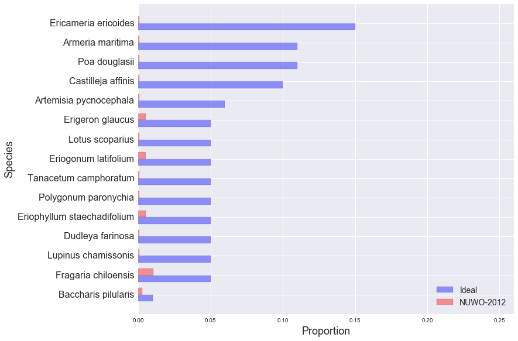

golden gate national parks conservancy: scrub mix
NUWO-2012
EAPO-2011
NMS-2010
NMS-2011
NMS-2012
NUWO-2010
NUWO-2011
NUWO-2012
SUDU-2008
SUDU-2009
SUDU-2010
SUDU-2011
SUDU-2012
Ideal and Observed Scrub Mix, NUWO-2012:
Other Species in NUWO-2012 Sample:
| Species | Observed % |
|---|---|
| Cupressus macrocarpa | 14.62% |
| Bromus diandrus | 14.10% |
| Lolium sp. | 10.44% |
| Bare ground | 8.09% |
| Ehrharta erecta | 4.70% |
| Hordeum sp. | 3.92% |
| Litter | 3.66% |
| Briza maxima | 3.66% |
| Vulpia sp. | 3.39% |
| Annual exotic grass | 2.87% |
| Medicago polymorpha | 2.61% |
| Rubus ursinus | 2.35% |
| Scrophularia californica | 2.35% |
| Avena sp. | 1.83% |
| Oxalis incarnata | 1.83% |
| Erodium sp. | 1.57% |
| Stellaria media | 1.31% |
| Achillea millefolium | 1.31% |
| Lupinus arboreus | 1.31% |
| Aster chilensis | 1.31% |
| Mimulus aurantiacus | 1.04% |
| Fumaria parviflora | 1.04% |
| Stachys ajugoides | 0.78% |
| Ribes sanguineum | 0.78% |
| Geranium dissectum | 0.78% |
| Marah fabaceus | 0.52% |
| - | 0.52% |
| Phacilia californica | 0.52% |
| Sonchus oleraceus | 0.26% |
| Iris douglasii | 0.26% |
| Juncus leseuerii | 0.26% |
| Gnaphalium sp. | 0.26% |
| Ceanothus thrysiflorus | 0.26% |
| Grindelia hirsutula | 0.26% |
| Claytonia Perfoliata | 0.26% |
| Anagallis arvensis | 0.26% |
| Heteromeles arbutifolia | 0.26% |
| Silene gallica | 0.26% |
| Cerastium glomeratum | 0.26% |
| Vicia sativa | 0.26% |
| Gnaphalium stramineum | 0.26% |
| Bromus hordeaceus | 0.26% |
| Anthriscus caucalis | 0.26% |